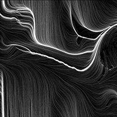
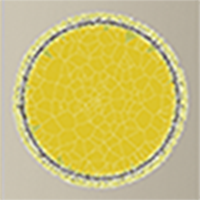
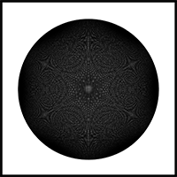
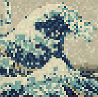
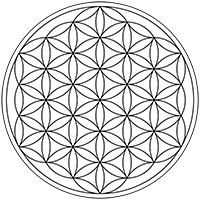
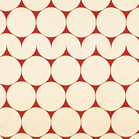
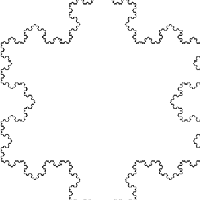

Generative Art Photo Gallery
Generative art refers to a type of art made with an autonomous system or device. Generative art is often seen in conjunction with algorithmic art, which is specifically computer generated artwork. - Kim Sleeper







→
←
X
Kim Sleeper | Math 142 |
CUNE